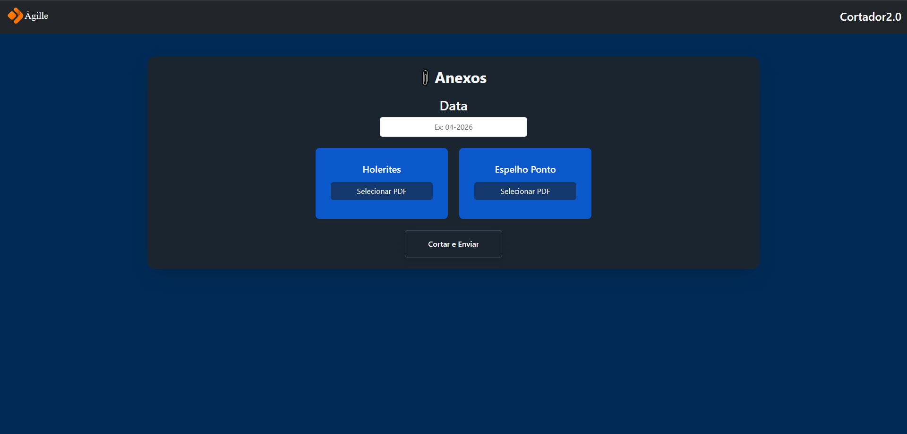

Upload simplificado
Interface desenvolvida para permitir o envio dos arquivos de maneira rápida e intuitiva.
Aplicação desenvolvida para simplificar e automatizar processos de manipulação e organização de arquivos, reduzindo tarefas manuais e tornando o fluxo de trabalho mais rápido.

O Cortador foi desenvolvido com o objetivo de facilitar uma tarefa que anteriormente precisava ser executada de forma manual.
A aplicação centraliza esse processo em uma interface web simples, permitindo que o usuário envie os arquivos necessários e realize o processamento diretamente pelo navegador.
O projeto foi construído pensando principalmente em produtividade, facilidade de uso e redução de erros durante o processo.
Processos manuais envolvendo arquivos podem consumir bastante tempo, além de aumentar o risco de erros e dificultar a padronização da operação.
A necessidade era transformar uma tarefa operacional repetitiva em um fluxo mais simples, onde o usuário pudesse executar todo o processo através de uma única ferramenta.
Interface desenvolvida para permitir o envio dos arquivos de maneira rápida e intuitiva.
O servidor recebe os arquivos e executa automaticamente as operações necessárias.
Redução do tempo gasto em tarefas repetitivas e diminuição de intervenções manuais.
O sistema pode ser utilizado diretamente pelo navegador sem necessidade de instalação local.
Interface desenvolvida pensando em simplicidade e facilidade de utilização.
Além do desenvolvimento da interface, o projeto envolveu construção da lógica no backend, processamento de arquivos, tratamento de erros e disponibilização da aplicação para os usuários.